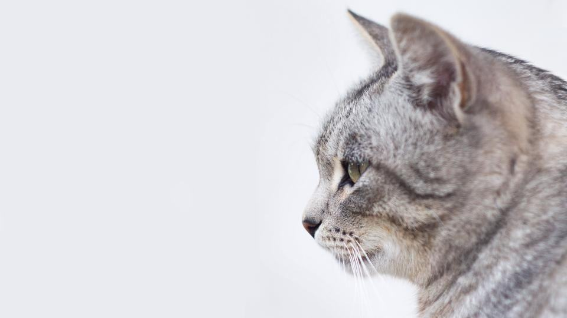

Prislista
Priset beror på pälslängd, filt och hur många katter som bor i hemmet.
Ett pris per katt, bilresan bjuder vi på
Klor och tassar
Det snabbaste besöket.
395 krper katt- Kloklipp alla fyra tassar
- Trim mellan trampdynorna
- Titt i öron och ögon
- Resa inom tre mil
- Populärast
Hemtrim
Bad, avfiltning eller hygienklipp hemma.
fr. 995 krper katt, upp till 90 min- Bad med kattschampo
- Avfiltning i korta pass
- Lågljudsfön på 48 dB
- Vi städar upp efteråt
Lejonklipp hemma
Kort päls på kroppen, lejonmanen sparas.
fr. 1 395 krper katt- Hela kroppen klippt
- Manen och svanstofsen lämnas orörda
- Bad om katten tål det
- Ny tid om tre månader
Fler priser
| Korthårig katt, bad och fön | fr. 795 kr |
|---|---|
| Långhårig katt, bad och fön | fr. 995 kr |
| Filtborttagning, varje kvart | 190 kr |
| Hygienklipp | fr. 650 kr |
| Lejonklipp | fr. 1 395 kr |
| Kloklipp | 395 kr |
| Katt nummer två i samma hem | −20 % |
| Utställningsbad hos uppfödare | fr. 750 kr/katt |
| Resa utöver tre mil | 6 kr/km |
Priserna gäller inom tre mil från Gävle, Söderhamn eller Tierp. Avfiltning utöver det beräknade debiteras per kvart.
Från ringklocka till dammsugare
- 1

Bokning och bild
Du skickar en bild på pälsen och berättar om kattens hälsa. Vi föreslår en tid och uppskattar hur lång tid det tar.
- 2

Vi packar upp
Vi kommer med väska på hjul och ställer i ordning i det rum du väljer. Katten får titta på i lugn och ro.
- 3

Behandling i pass
Högst femton minuter i taget, med paus när katten säger ifrån.
- 4

Städat efter oss
Vi dammsuger upp hår och torkar av ytorna innan vi åker.
Vad måste finnas hemma hos mig?
Ett eluttag, en diskbänk, ett bord eller ett badkar. Allt annat tar vi med oss.
Klipper ni hundar också?
Nej. Vi luktar bara katt, och det är en av anledningarna till att katterna slappnar av.
Hur långt åker ni?
Resan ingår inom tre mil från Gävle, Söderhamn eller Tierp. Längre bort tar vi 6 kronor per kilometer.
Kan ni hjälpa en katt som biter?
Oftast. Vi använder handduksteknik och korta pass, och slutar om katten blir för stressad.
Kan ni klippa en katt med hjärtfel?
Vi vill att veterinären har godkänt behandling först. Vi arbetar då i extra korta pass.
Vad händer om katten gömmer sig?
Vi väntar en stund och försöker igen. Hittar vi inte katten alls tar vi 250 kronor för resan.